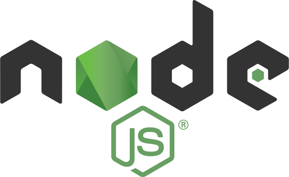

Salut, je m'appelle Pascal. Je suis un programmeur full-stack autodidacte avec multiples intérêts, comme la programmation , la robotique, le voyage, la conception mécanique et la guitare!
, la robotique, le voyage, la conception mécanique et la guitare!
EXPÉRIENCE EN PROGRAMMATION

Node.js
Programmation back-end en javascript avec de multiples librairies comme Express.js.
Programmation back-end en javascript avec de multiples librairies comme Express.js.
Programmation de UI en javascript avec React.js ou en en simple javascript.
Design front end avec CSS et HTML. Familiarité avec la librairie Bootstrap.
Programmation de bas niveau en C/C++. Code pour microcontrôleur Arduino et conception de jeux vidéo.
Programmation back-end RESTful, gestion de base de données, framework MVC.
Programmation d'une simulation de bras robotique avec le logiciel Godot.
EXPÉRIENCE PROFESSIONNELLE
PROGRAMMEUR FULL STACK
HOPPER
- Programmer un système pour rechercher et analyser des millions de vols d'avions
- Employer les technologies Ruby on Rails, Java, NoSQL, MapReduce et SQLite
- Programmer des tests pour s’assurer de la stabilité du système
ÉLECTROMÉCANICIEN
GROUPE PPD UHMW
- Modifier la programmation d’automates programmables (Ladder)
- Manipuler et configurer un robot industriel Kuka
- Réparer des systèmes électriques, mécaniques et hydrauliques
STAGIAIRE EN GÉNIE MÉCANIQUE
TLD CANADA
- Concevoir de nouvelles pièces et assemblages pour une machine prototype
- Coopérer avec la production pour clarifier les instructions d’installations
- Générer et modifier des plans mécaniques
AGRICULTEUR
FERME FAMILIALE
- Réparer et entretenir des équipements agricoles
- Construire des bâtiments de ferme intégralement
- Conduire des tracteurs et opérer de la machinerie